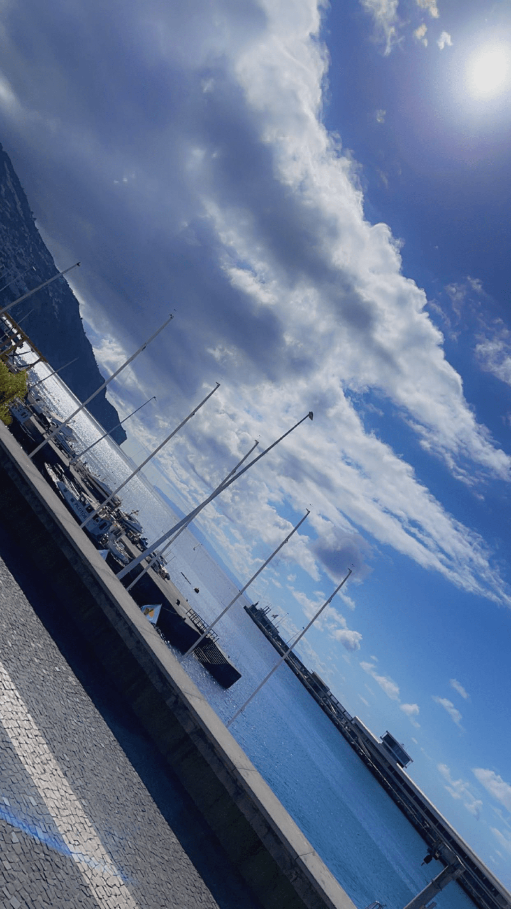
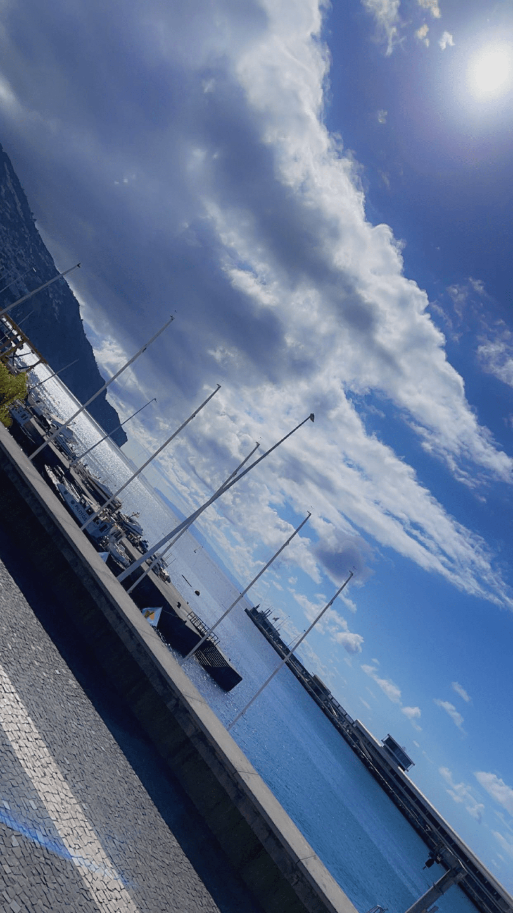

Intro
Madeira is een prachtig eiland gelegen in de Atlantische Oceaan, ongeveer 1000 kilometer verwijderd van het Portugese vasteland, ter hoogte van Marokko. Het maakt deel uit van een archipel, waarbij de naburige eilanden Porto Santo, Ilhas Desertas en Ilhas Selvagens horen. Terwijl Porto Santo bewoond is, blijven Ilhas Desertas en Ilhas Selvagens ongerept en vrij van menselijke bewoning, waardoor ze een paradijs zijn voor zeldzame diersoorten en natuurreservaten. De hoofdstad van Madeira is Funchal, een bruisende stad waar ongeveer twee derde van de eilandbevolking woont. Met zijn 111.892 inwoners is het tevens degrootste stad op Madeira. Funchal biedt een unieke mix van historische charme, prachtige tuinen, en een levendige haven.Ondanks de relatief kleine omvang van het eiland, met een breedte van ongeveer 27 kilometer en een lengte van 57 kilometer, heeft Madeira een gevarieerd landschap.
De kustlijn wordt gedomineerd door imposante kliffen die dramatisch in de oceaan storten, terwijl het binnenland wordt gekenmerkt door bergachtig terrein. De hoogste berg,de Pico Ruivo, torent uit boven de rest van het eiland en biedt avontuurlijke wandelaars adembenemende uitzichten. Het westelijke deel van Madeira is ruig en onherbergzaam, waar de natuur ongestoord zijn gang kan gaan.Dit deel van het eiland is vrijwel onbewoond, wat bijdraagt aan het mystieke en wilde karakter van dit bijzondere eiland. Madeira’s veelzijdigheid, van de beboste bergen tot de steile kustlijnen, maakt het tot een geliefde bestemming voor natuurliefhebbers en avonturiers.
 
